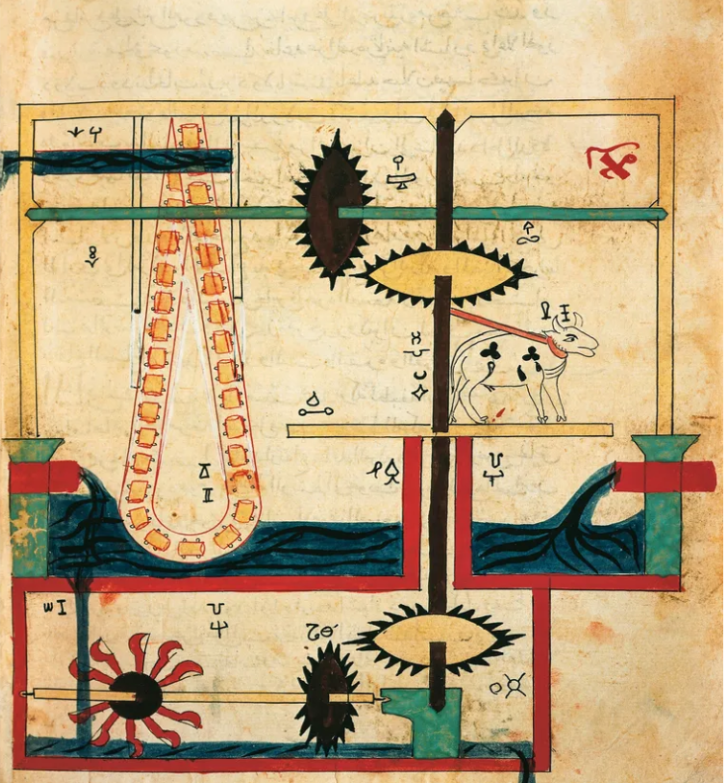
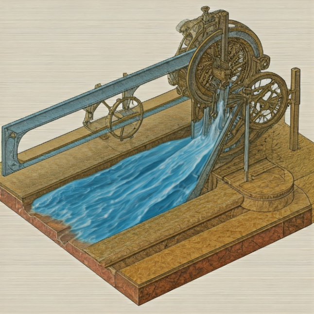
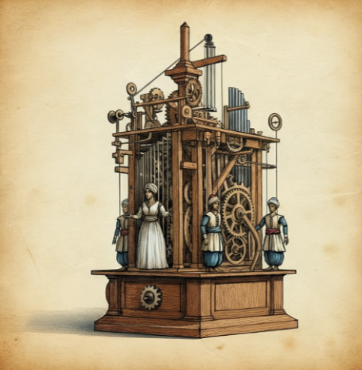

Commencon par la première invention:
L’horloge à elephant
Cette horloge est un merveilleux chef-d'œuvre qui rassemble les domaines de la science, de la technologie, de l'ingénierie, des arts et des mathématiques (STEAM) de l'âge d'or de la civilisation islamique. Des principes scientifiques précis, des techniques d'eau intelligentes, une ingénierie élaborée, des arts intégrant diverses cultures et des mathématiques garantissant des performances précises étaient évidents. C'est un exemple vivant que les racines des révolutions scientifiques et techniques contemporaines sont profondément enracinées dans l'authentique héritage arabo-islamique. L'horloge automatique hydraulique en forme d'éléphant est un symbole d'innovation permanente qui transcende les frontières du temps et du lieu et fait partie de la civilisation islamique qui a ouvert la voie à des révolutions industrielles majeures et continue de nous inspirer pour l’avenir. L'horloge éléphant est une œuvre d'art éblouissante qui reflète les cultures anciennes, où l'éléphant représente la culture indienne et africaine, le dragon représente la culture chinoise, l'oiseau phénix représente la culture égyptienne ancienne, l'eau représente la culture grecque antique, le tapis représente la culture persane, et le turban représente la culture islamique. L'horloge arabe, inventée par Al-Jazari il y a plus de 800 ans, est exposée au Festival des sciences et des technologies "STEAM 2024" organisé par le parc scientifique du roi Salman jusqu'à la fin du mois de septembre.

L’invention la plus iconique d’Al-Jazari est cette horloge à éléphant, qui ravit encore aujourd’hui le public. Des reproductions modernes de cet objet fonctionnant à l’eau sont exposées aux quatre coins du monde, notamment au centre commercial Ibn Battuta de Dubaï, à l’Institut d’histoire des sciences arabo-islamiques de Francfort en Allemagne et au Musée de l’horlogerie de Le Locle en Suisse.
Ensuite nous avons
Le premier robot de l'histoire
Un autre engin fantastique d’Al-Jazari intéresse tout particulièrement les historiens des sciences, car nombre d’entre eux pensent qu’il s’agit du premier « robot » programmable de l’histoire. À l’image d’une boîte à musique, cette invention en forme de bateau transportant à son bord quatre « musiciens » (un harpiste, un flûtiste et deux joueurs de tambour) a été conçue pour jouer de la musique à des fins de divertissement. Le mécanisme animant les joueurs de tambour pouvait être programmé pour jouer différents rythmes. De par leur ingéniosité, ces machines étaient des jouets pour les personnes fortunées. Le courtisan Al-Jazari savait qu’il lui fallait éblouir ses riches mécènes, qui à leur tour, surprendraient les dignitaires en visite avec la dernière merveille née du génie de leur citoyen. Lui qui était un artisan aux origines modestes n’était pas indifférent aux besoins du quotidien et mit au point des objets utiles permettant d’alléger la charge des tâches quotidiennes. Dans son livre, il décrit en détail au moins cinq machines facilitant le puisage de l’eau et l’irrigation, que ce soit à la ferme ou à la maison. Il évoque aussi d’autres machines très pratiques : une manivelle qui transforme les mouvements linéaires en mouvements rotatifs et un dispositif permettant l’étalonnage exact des verrous et autres ouvertures, entre autres.
Le mécanisme interne d’une machine pour puiser l’eau dévoile la manière dont les engrenages dissimulés entraînent une vache autour d’une tige verticale, ce qui actionne le mécanisme qui puise l’eau.
Par la suite nous allons voir:
La pompe a eau
La pompe a eau
La conception de cette pompe repose sur un mécanisme de vis sans fin, qui permet de soulever l'eau d'un niveau inférieur à un niveau supérieur. Elle intègre également des ressorts et des roues qui facilitent le mouvement de la vis, augmentant ainsi l'efficacité du pompage. La pompe pouvait être actionnée manuellement ou par un mécanisme de mouvement hydraulique, démontrant une compréhension avancée des principes de la mécanique. Les matériaux utilisés dans la construction de la pompe à eau d'Al-Jazari incluent principalement le bois, qui était courant à l'époque, ainsi que des pièces métalliques pour renforcer certains composants et assurer la durabilité du mécanisme. Cette combinaison de matériaux a permis de créer un dispositif à la fois fonctionnel et robuste. Sur le plan historique, la pompe à eau d'Al-Jazari est considérée comme l'une des premières machines à eau de l'histoire, illustrant des concepts d'ingénierie qui seraient utilisés plus tard dans d'autres cultures. Son impact sur l'agriculture a été significatif, permettant aux agriculteurs de transporter l'eau nécessaire pour irriguer leurs champs, ce qui a contribué à l'essor économique et démographique des régions qu'elle desservait.
Finalement pour notre dernière invention, nous allons plutôt nous pencher sur une invention musicale qui est :
Le robot musical
Le robot musical
Le robot musical, une invention fascinante d'Al-Jazari, fait partie de son ouvrage emblématique, Le Livre de la connaissance des dispositifs mécaniques ingénieux. Ce dispositif est souvent considéré comme l'un des premiers exemples de mécanismes automatiques dans l'histoire de l'ingénierie. Conçu pour divertir, le robot musical était constitué d'un ensemble de musiciens mécaniques qui jouaient de la musique de manière autonome. Cette invention témoigne de l'ingéniosité et de la créativité d'Al-Jazari dans le domaine de la mécanique. Le robot musical était généralement alimenté par un mécanisme à poids et à roues dentées. Il fonctionnait grâce à un système de cames et de leviers, qui permettait de synchroniser le mouvement des différentes parties du robot. Lorsqu'il était activé, un poids se déplaçait, faisant tourner une roue qui, à son tour, entraînait les différentes pièces du robot. Ces pièces étaient souvent des figurines représentant des musiciens jouant d'instruments variés, tels que des tambours, des flûtes et des luths. La musique produite était généralement simple, mais l'effet visuel du spectacle était captivant, attirant l'attention des spectateurs. Le robot musical d'Al-Jazari s'inscrit dans un contexte culturel riche, où l'art et la science étaient étroitement liés. À l'époque, les mécanismes automatiques étaient souvent utilisés dans les palais et les jardins pour divertir la noblesse. Al-Jazari, en tant qu'ingénieur et inventeur, a su allier la technologie et l'art pour créer un objet à la fois fonctionnel et esthétique. Son travail a influencé de nombreux inventeurs ultérieurs, tant dans le monde islamique qu'en Europe, et a contribué à l'évolution des dispositifs mécaniques.
3) Conclusion
Al-Jazari, un éminent ingénieur et inventeur du XIIe siècle, a laissé une empreinte indélébile dans l'histoire de la science et de la technologie. Son œuvre, principalement compilée dans le livre "Kitab al-Fehad al-Hiyal" (Le Livre de la connaissance des dispositifs ingénieux), présente une multitude d'inventions qui témoignent de son ingéniosité et de sa compréhension avancée des principes mécaniques. Parmi ses contributions majeures, on trouve ses automates et dispositifs mécaniques, notamment des figures animées qui ont diverti les rois et les nobles. Ces créations, allant des horloges à eau aux figures articulées, démontrent une compréhension précoce de la mécanique et de la programmation, concepts qui ne deviendront populaires qu'au cours des siècles suivants. Al-Jazari a également fait des avancées significatives dans le domaine de l'hydraulique. Il a conçu des pompes et des systèmes d'irrigation qui ont amélioré l'agriculture dans la région. Son invention de la pompe à vis et de la pompe à piston a permis de déplacer l'eau plus efficacement, augmentant ainsi la productivité des terres agricoles. En outre, ses horloges, notamment l'horloge à eau et l'horloge à défilement, sont des merveilles d'ingénierie qui allient esthétique et fonctionnalité. Ces dispositifs ont non seulement servi à indiquer l'heure, mais ont également intégré des éléments artistiques qui reflètent la culture islamique de l'époque. L'héritage d'Al-Jazari est immense et continue d'inspirer les ingénieurs et les inventeurs modernes. Ses travaux ont ouvert la voie à de futures innovations dans des domaines tels que la robotique. Les principes utilisés par Al-Jazari dans ses automates préfigurent des concepts de robotique modernes, posant ainsi les bases d'une discipline qui évolue rapidement aujourd'hui. De plus, ses écrits ont influencé non seulement les scientifiques du monde islamique, mais aussi ceux de l'Europe médiévale, contribuant ainsi à la Renaissance et à l'avancement des connaissances techniques. Enfin, Al-Jazari est souvent cité comme un exemple d'ingéniosité et de créativité dans l'éducation STEM (sciences, technologie, ingénierie et mathématiques). Ses inventions servent d'exemples pratiques pour enseigner des concepts complexes aux étudiants. En somme, Al-Jazari est un pionnier dont les contributions transcendent les époques. Son approche innovante et son désir de comprendre et d'améliorer le monde qui l'entoure font de lui une figure emblématique de l'ingénierie. Sa capacité à allier art et science à travers ses inventions continue de résonner aujourd'hui, rappelant l'importance de l'innovation dans le progrès humain. À travers ses travaux, Al-Jazari nous enseigne que la curiosité et la créativité sont des moteurs essentiels du progrès, et son héritage perdure dans le monde moderne, inspirant de nouvelles générations d'inventeurs et de scientifiques.